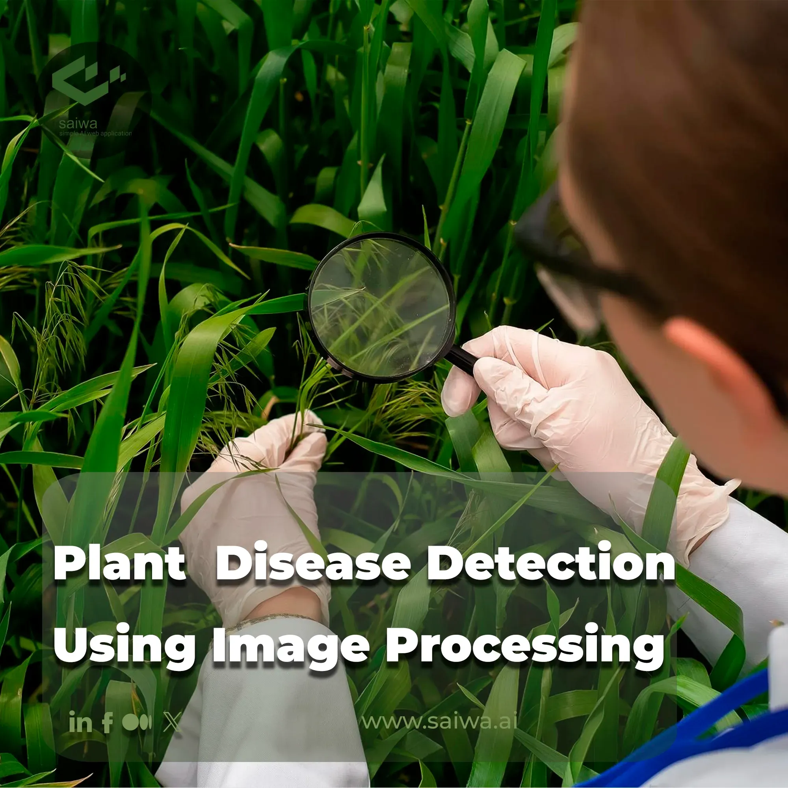

About the Project
Smart Crop Management is a digital platform designed to help farmers make informed decisions about their crops through real-time data analytics, AI-driven recommendations, and IoT-based monitoring. This solution aims to reduce uncertainty, optimize inputs, and ensure healthier crops with better returns.
Disease Detection
Utilizes machine learning models to detect early signs of crop diseases and recommend preventive measures.

Fertilizer Optimization
Suggests nutrient plans based on soil data and crop type to avoid over or under-fertilization.